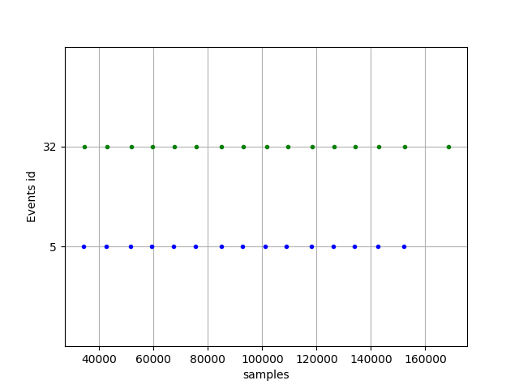
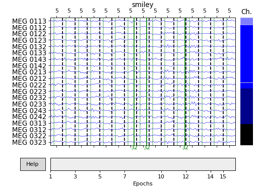
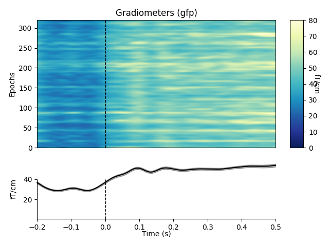
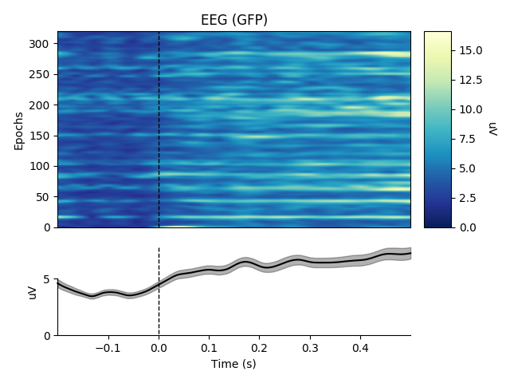
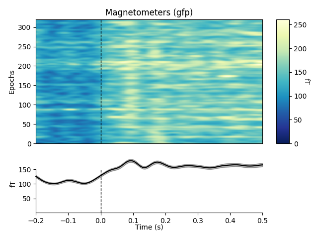

Note
Click here to download the full example code
Visualize Epochs data¶
import os.path as op
import mne
data_path = op.join(mne.datasets.sample.data_path(), 'MEG', 'sample')
raw = mne.io.read_raw_fif(
op.join(data_path, 'sample_audvis_filt-0-40_raw.fif'), preload=True)
event_id = {'auditory/left': 1, 'auditory/right': 2, 'visual/left': 3,
'visual/right': 4, 'smiley': 5, 'button': 32}
events = mne.find_events(raw)
epochs = mne.Epochs(raw, events, event_id=event_id, tmin=-0.2, tmax=.5,
preload=True)
del raw
Out:
Opening raw data file /home/circleci/mne_data/MNE-sample-data/MEG/sample/sample_audvis_filt-0-40_raw.fif...
Read a total of 4 projection items:
PCA-v1 (1 x 102) idle
PCA-v2 (1 x 102) idle
PCA-v3 (1 x 102) idle
Average EEG reference (1 x 60) idle
Range : 6450 ... 48149 = 42.956 ... 320.665 secs
Ready.
Current compensation grade : 0
Reading 0 ... 41699 = 0.000 ... 277.709 secs...
319 events found
Event IDs: [ 1 2 3 4 5 32]
319 matching events found
Applying baseline correction (mode: mean)
Not setting metadata
Created an SSP operator (subspace dimension = 4)
4 projection items activated
Loading data for 319 events and 106 original time points ...
0 bad epochs dropped
This tutorial focuses on visualization of epoched data. All of the functions introduced here are basically high level matplotlib functions with built in intelligence to work with epoched data. All the methods return a handle to matplotlib figure instance.
Events used for constructing the epochs here are the triggers for subject being presented a smiley face at the center of the visual field. More of the paradigm at Trigger codes for the sample data set..
All plotting functions start with plot. Let’s start with the most
obvious. mne.Epochs.plot() offers an interactive browser that allows
rejection by hand when called in combination with a keyword block=True.
This blocks the execution of the script until the browser window is closed.
epochs.plot(block=True)
The numbers at the top refer to the event id of the epoch. The number at the bottom is the running numbering for the epochs.
Since we did no artifact correction or rejection, there are epochs contaminated with blinks and saccades. For instance, epoch number 1 seems to be contaminated by a blink (scroll to the bottom to view the EOG channel). This epoch can be marked for rejection by clicking on top of the browser window. The epoch should turn red when you click it. This means that it will be dropped as the browser window is closed.
It is possible to plot event markers on epoched data by passing events
keyword to the epochs plotter. The events are plotted as vertical lines and
they follow the same coloring scheme as mne.viz.plot_events(). The
events plotter gives you all the events with a rough idea of the timing.
Since the colors are the same, the event plotter can also function as a
legend for the epochs plotter events. It is also possible to pass your own
colors via event_colors keyword. Here we can plot the reaction times
between seeing the smiley face and the button press (event 32).
When events are passed, the epoch numbering at the bottom is switched off by default to avoid overlaps. You can turn it back on via settings dialog by pressing o key. You should check out help at the lower left corner of the window for more information about the interactive features.
events = mne.pick_events(events, include=[5, 32])
mne.viz.plot_events(events)
epochs['smiley'].plot(events=events)
- 
- 
To plot individual channels as an image, where you see all the epochs at one
glance, you can use function mne.Epochs.plot_image(). It shows the
amplitude of the signal over all the epochs plus an average (evoked response)
of the activation. We explicitly set interactive colorbar on (it is also on
by default for plotting functions with a colorbar except the topo plots). In
interactive mode you can scale and change the colormap with mouse scroll and
up/down arrow keys. You can also drag the colorbar with left/right mouse
button. Hitting space bar resets the scale.
epochs.plot_image(278, cmap='interactive', sigma=1., vmin=-250, vmax=250)
Out:
319 matching events found
No baseline correction applied
Not setting metadata
0 projection items activated
0 bad epochs dropped
We can also give an overview of all channels by calculating the global
field power (or other other aggregation methods). However, combining
multiple channel types (e.g., MEG and EEG) in this way is not sensible, so
by default if you don’t specify specific channel picks the
plot_image() method will generate a separate figure for
each channel type.
epochs.plot_image(combine='gfp', sigma=2., cmap="YlGnBu_r")
- 
- 
- 
Out:
319 matching events found
No baseline correction applied
Not setting metadata
0 projection items activated
0 bad epochs dropped
319 matching events found
No baseline correction applied
Not setting metadata
0 projection items activated
0 bad epochs dropped
319 matching events found
No baseline correction applied
Not setting metadata
0 projection items activated
0 bad epochs dropped
combining channels using "gfp"
combining channels using "gfp"
combining channels using "gfp"
You also have functions for plotting channelwise information arranged into a shape of the channel array. The image plotting uses automatic scaling by default, but noisy channels and different channel types can cause the scaling to be a bit off. Here we define the limits by hand.
epochs.plot_topo_image(vmin=-250, vmax=250, title='ERF images', sigma=2.,
fig_facecolor='w', font_color='k')
Total running time of the script: ( 0 minutes 13.326 seconds)
Estimated memory usage: 144 MB